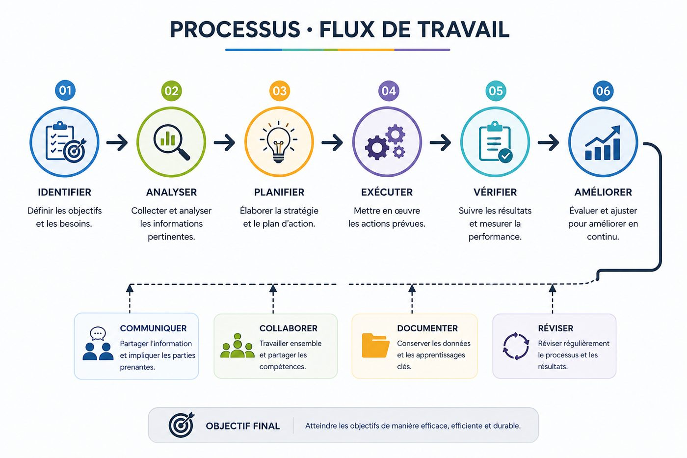
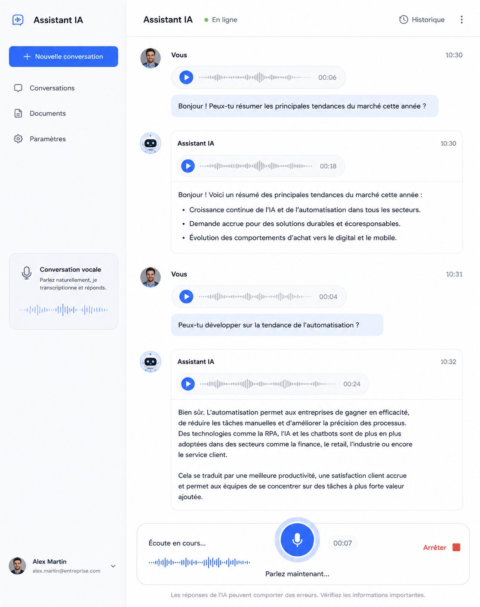

Que vous gériez seul votre entreprise ou une équipe, on construit exactement ce dont vous avez besoin — pas un système trop complexe que personne n'utilisera.
On regarde comment l'information circule dans votre entreprise — vente, gestion, opérations, facturation — et on élimine les étapes manuelles qui n'ont pas besoin d'un humain.

On conçoit des agents conversationnels adaptés à votre activité, capables de répondre, qualifier et assister vos clients — comme un prolongement de votre équipe.
Notre première solution de ce type, MARK Copilot, est un exemple concret de ce qu'on construit. Le découvrir →

Pas besoin de tout changer. On implante l'IA directement dans les outils et façons de faire que votre équipe utilise déjà, pour une adoption naturelle plutôt qu'un virage forcé.
Dès qu'un outil expose une API, on peut y connecter un agent sur mesure. Voici un aperçu de ce qu'on a déjà bâti.
Des agents qui planifient et publient vos contenus sur vos réseaux, comme Instagram, sans intervention manuelle.
Des agents qui prennent les rendez-vous, gèrent les calendriers et envoient les courriels au bon moment.
Un agent qui gère tout le référencement : audit, création des balises titre et description, textes alternatifs des images, descriptions de produits.
Un agent qui surveille vos systèmes 24/7 et envoie des notifications sur votre téléphone : tout va bien, ou alerte en cas de problème.
Un agent qui organise vos journées et vos tâches, avec un rappel matinal personnalisable pour bien démarrer.
De la vente au détail à l'épicerie, la restauration ou la logistique : on automatise les processus qui font tourner votre activité.
Vous ne voyez pas votre besoin ? Si l'outil a une API publique, on peut très probablement y connecter un agent.
On regarde ensemble ce qui vaut vraiment la peine d'être automatisé chez vous.
Réserver un appel